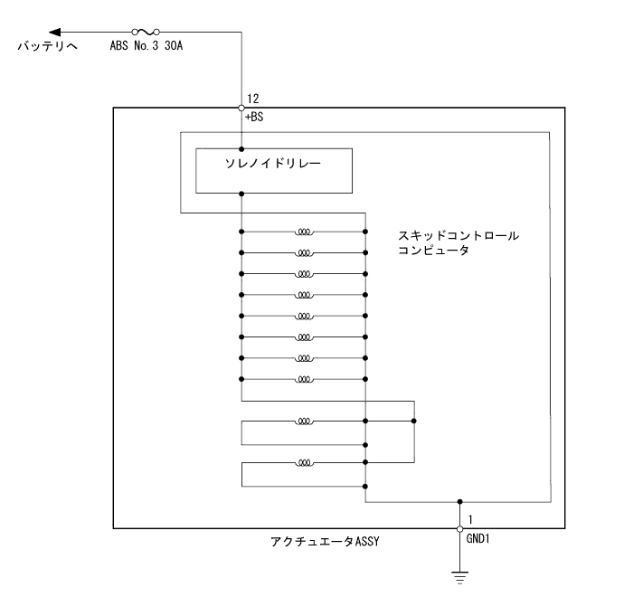
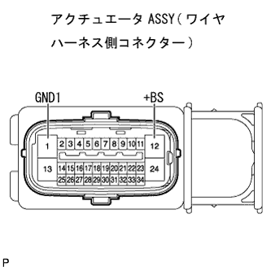

DTC C0278/11 ABS Solenoid Relay Circuit Open |
DTC C0279/12 ABS Solenoid Relay Circuit Short |
| DTC No. | DTC Detection Condition | DTC Output Related Items |
|---|---|---|
| C0278/11 |
|
|
| C0279/12 | Immediately after the IG is turned ON, when the solenoid relay is OFF, the contact in the solenoid relay remains ON for 4 seconds or more | Open in solenoid relay circuit in actuator assembly |

| Step 1 | Inspect Fuse (ABS No.3 30A) |
Using the SST (Toyota electrical tester), inspect the fuse (ABS No.3 30A).
| Tester Connection | Condition | Standard |
|---|---|---|
| ABS No.3 Fuse | Always | Below 1 Ω |
|
| ||||
| OK | |
| Step 2 | Inspect Wire Harness and Connector (Solenoid Relay Power Source System) |
Check that the brake actuator assembly connector is properly engaged.
Turn the IG OFF and disconnect the brake actuator assembly connector.
Check that the connector case and terminals are free of deformation and corrosion.
 |
Using the SST (Toyota electrical tester), measure the resistance and voltage between the wire harness side connector of the brake actuator assembly and body ground.
| Tester Connection | Condition | Standard |
|---|---|---|
| 1 (GND1) - Body ground | Always | Below 1 Ω |
| Tester Connection | Condition | Standard |
|---|---|---|
| 12 (+BS) - Body ground | Always | 10 to 14V |
|
| ||||
| OK | |
| Step 3 | Recheck DTC |
Clear the DTCs. (see)
Turn the IG OFF → ON and check that the ABS warning light comes on for approximately 3 seconds and then goes off.
Turn the IG OFF → ON and drive at a vehicle speed of 6km/h or more.
If the ABS warning light remains on, check the DTCs. (see)
| Result | Proceed to |
|---|---|
| OK | A |
| Malfunction Code | B |
|
| ||||
| A | ||
| ||